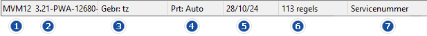

Hieronder vindt u een overzicht van:
Tips & Tricks.
Veelgebruikte sneltoetsen of knoppen om sneller te navigeren.
|
|
Bij de Powerall login kan ingave van de gebruikersnaam en wachtwoord; twee keer op de Enter toets gedrukt worden, i.p.v. met de muis op de knop Inloggen te klikken. |
| Taakbalk knoppen |
|
|
In de menu taakbalk, kunnen meerdere taken of administraties geopend of actief zijn. Iedere administratie heeft zijn eigen kleur. Met de toets Ctrl+1, Ctrl+2 etc. wordt direct de eerste, tweede etc. partitie of taak her- of geopend. Turquoise = Actief en nu in gebruik, Donkergrijs actief en Grijs = niet actief. |
|
|
Informatie knop In de menu taakbalk, deze geeft belangrijke informatie weer, zie Powerall Connect informatie. |
|
|
Help knop, hiermee wordt de Powerall Connect help documentatie geopend in de standaard browser. |
|
|
In de menu taakbalk geeft deze functie de CRM-notities weer. Ook op te roepen met Shift+F9 toets. |
|
|
Menu taakbalk iconen voor veel gebruikte functies namelijk; Relaties, Artikelen en Machines. |
|
|
Via F6 Opvragen relaties, worden de (actuele) relatiegegevens getoond. |
|
|
Via F7 Opvragen artikelen, worden de (actuele) artikelgegevens getoond. |
|
|
Via F8 Opvragen machines worden de (actuele) machinegegevens getoond. |
| Algemeen |
| Artikel zoeken | Artikelen snel zoeken in een regel van een order/bon of in het artikelbestand. Dit kan via ? (zoeknaam), > (leverancier), + (inkoopnummer), - (locatie), = (zoeknaam 2) of * (zoeken op alle items), zie ook Zoek artikelen. - Bijv. artikelcode 01-00404 kan gezocht worden met *0404. |
| Datum invoer | Snel de datum invoeren kan door bijv.: - * (vandaag). - 2 geeft de datum van de 2de van de huidige maand. - 3004 geeft 30-04-25 van huidige jaar. |
| Navigeren in het menu | Navigatie door het menu kan op verschillende manieren: - 1 Met behulp van de muis. - 2 Met de pijltjestoetsen. - 3 Door het ingeven van de letters, die voor iedere 'klassieke' menuregel staan. Bijv. menukeuze BRR geeft direct Onderhoud relaties.- 4 In Menu 3.0 door het direct in typen van de tekst bijv. bank. |
| Tab en Shift + Tab | D.m.v. de Tab (volgende veld) en Shift+Tab (vorige veld) toetsen, kan door de schermvelden in Powerall Connect genavigeerd worden. |
| Memo relatie Shift-F6 | De memo of notitie van de relatie, Tabblad Dossier wordt weergegeven, bij het gebruik van deze toetscombinatie. - Aanwezig bij bon, inkoop-, verkooporder, offerte, verhuur en servicemelding. |
| & | & = en Zoeken in het veld Filter op bijv. een artikel dat voldoet aan meerdere termen. Bijv. SPAN&BOUT. Dit kan in het zoekscherm voor relaties, artikelen en machines. |
| ? | Zoeken op (een deel van de) omschrijving van een artikel. D.m.v. een vraagteken voorafgaand aan de zoekopdracht zoekt Powerall binnen de omschrijving van een artikel. |
| | | | = of Zoeken in het veld Filter op bijv. een artikel dat voldoet aan één van ingegeven termen. Bijv. 100.3|1003. Dit kan in het zoekscherm voor relaties, artikelen en machines. |
| Overige |
| F1 | Helpfunctie binnen Powerall Connect. |
| F2 | Wijzigen, van betreffende gegevens |
| F4 | Bij veel invoervelden is het mogelijk om te zoeken. Via F4 wordt gelijk het zoekvenster geopend bijv. van Relaties. In het zoekvenster kan de sortering gewijzigd worden door herhaaldelijk op F4 te drukken. |
| F5 | Direct afdrukken op de juiste printer. Bij lijsten, orders en andere documenten krijgt u een voorbeeld te zien, waarna u deze kunt afdrukken. Met F5 kunt u direct zonder voorbeeld een printer kiezen en afdrukken. |
| * (datum) | Snel de datum (formaat dd/mm/jj) invoeren kan door bijv.: - * (vandaag). - 2 geeft 02-02-26 d.w.z. 2de van de huidige maand. - 3004 geeft 30-04-26 van huidige jaar. |
| Periode | Om de periode sneller in te geven, gebruik een punt i.p.v. een streepje. - Bijv. 06.26 geeft 06-26. |
| Knoppen |
|
|
E-mail knop, hiermee opent u Outlook om een e-mail te versturen. |
|
of |
Openen knop, hiermee opent u de betreffende map in Windows verkenner. Gebruikt o.a. bij Onderhoud artikelen, Onderhoud machines en Onderhoud relaties, tabblad Dossier. |
| SMS of WhatsApp knop, hiermee kan een (standaard) bericht verzonden worden |
|
|
Toevoeg knop, hiermee voegt u een nieuw item toe. Bijv. een relatie. |
|
|
Wijzig knop, hiermee wijzigt u bepaalde gegevens. |
|
|
Prullenbak knop, hiermee wordt een item verwijderd, bijv. een leverancier bij Onderhoud artikelen (ABA). |
|
|
Zoek knop ( loepje of vergrootglas) hiermee opent u het zoekvenster. De zoekfunctie is ook aan te roepen met de functie- of sneltoets F4. |
| Knoppen onderhoud / opvragen |
| Kopieer knop, hiermee kopieert u bijv. bij Opvragen relaties F6 de NAW-gegevens, zodat die geplakt kunnen worden bijv. in Powerall Connect of Outlook e.d. |
|
|
Wijzigen / 'pennetje' knop, hiermee kan dit item bewerkt / gewijzigd worden. |
|
|
Taal knop, hiermee wijzigt u de betreffende omschrijving in een bepaalde taal. |
|
|
Telefoon knop, hiermee kan via de gekoppelde digitale telefooncentrale gebeld worden, bij Opvragen relaties instelling. |
|
|
Uitroepteken knop, bijv. bij Opvragen relaties is het BTW-nummer, nog niet gecontroleerd op geldigheid. |
|
|
Groen vinkje / controle 'teken', bijv. het BTW-nummer is correct of de notitie is afgewerkt. |
|
|
Vernieuwen / Refresh knop, hiermee wordt het betreffend item vernieuwd, bijv. de APK-datum. |
|
|
Website knop, hier mee opent u: 1 Bij Opvragen relaties de website met de standaard browser. 2 Bij Onderhoud machines de Website foto's (wijzigbaar). |
|
|
Met de knop Begin, wordt naar het begin / eerste item gegaan. |
|
|
Vorige of pijltje-naar-links knop, hiermee kan (bijv. bij onderhoud) naar het vorig item gegaan worden. NB. De page-up toets geeft hetzelfde resultaat. |
|
|
Volgende of pijltje-naar-rechts knop, hiermee kan (bijv. bij onderhoud) naar het volgende item gegaan worden. NB De page down toets geeft het zelfde resultaat. |
|
|
Met de knop Einde, wordt naar het eind / laatste item gegaan. |
| Knoppen orders |
|
|
Ga Direct naar de ingegeven <order>. |
|
|
Marge knop, hiermee zijn de marges van de orderregels zichtbaar, staat rechtsonder. |
|
|
Notitie knop, hiermee opent u een notitie of memo. Gebruikt bij o.a. Machines, Offertes, Inkoop-, Service-, Verkoop- of Werkorders. |
| Toetsenbord knoppen |
| ESC | - Beëindigen van actueel menu. - Beëindigen van actueel scherm, als cursor in 1e veld staat. - In een programma: Terug naar eerste of vorige invoerveld in het scherm. |
| Tab en Shift + Tab | D.m.v. de Tab (volgende veld) en Shift+Tab (vorige veld) toetsen, kan door de schermvelden in Powerall Connect genavigeerd worden. |
| Page Down | Kies de page down- toets om bij een order, bon, of factuur direct door te gaan, naar de 1e regel (als alles is ingevuld in de kop). - Bij wijzigen kies nogmaals page down om naar de laatste regel te gaan. |
| Page Down / Page up |
Blader toetsen (vooruit en terug) bij opvraag- en onderhoudsprogramma's. Deze toetsen zijn alleen actief als u de gegevens bekijkt of raadpleegt. |
|
|
D.m.v. de windows + pijltje-naar-beneden toets wordt het scherm geresized naar een kleiner of /groter scherm. - Werkt 'alleen' op 1e scherm / systeemmenu. |
| Alt toetsen |
| ALT + F4 | Menu of programma sluiten. |
| ALT toetsen: - Knoppen - Tabbladen |
In plaats van met de muis te klikken op een knop, kan ook de ALT-toets van het toetsenbord gebruikt worden. Een letter van de toets of het tabblad is dan onderstreept in Powerall Connect. Bij onderhoudsprogramma's worden de volgende ALT-toetsen standaard gebruikt: - Alt+A = Annuleren - Alt+O = Opvoeren (toevoegen) - Alt+P = Opslaan - Alt+V = Verwijderen - Alt+W = Wijzigen Druk hierbij bijv. tegelijk op de ALT en W toets, om iets te wijzigen. Voor de tabbladen kan ook de ALT-toets gebruikt worden. Een tabblad is een (deel) scherm, bijv. bij Opvragen relaties, tabblad Debiteurinfo Zie Hoe maak ik het streepje t.b.v. sneltoetsen zichtbaar? |
| Muis knoppen |
| Linker + Rechter muisknop | Om een tekst veld te kopiëren, druk tegelijkertijd met de Linker- en Rechtermuis knop op het veld en kies > Kopiëren. |
| Rechter muis knop in regels | Om een veld te kopiëren in de regels, druk de Rechtermuis knop en kies > Kopiëren. NB Dit is nog niet overal van toepassing in Powerall Connect. |
De in Nederland meest gebruikte Amerikaanse toetsenbordindeling, QWERTY, ziet er als volgt uit:

De algemene taakbalk is altijd aanwezig als Powerall Connect gestart is.
Voor informatie over de taakbalk iconen zie hierboven, deze verschijnen als er een administratie wordt gekozen.
In de bovenste witte balk, met rechts de gebruikelijke Windows-knoppen, kan het programma respectievelijk worden geminimaliseerd, gemaximaliseerd of afgesloten.
In de grijze balk bevinden zich de knoppen 1 t/m 4, voor de vier taken die per gebruikerslicentie kunnen uitgevoerd worden. Hiermee kunnen per gebruiker gelijktijdig maximaal 4 Powerall Connect partities, programma’s of sessies gebruikt worden.
De kleur van de knoppen geeft de taakstatus aan:
Door aanklikken met de muis, wordt de geselecteerde taak actief.
Opmerking: Afsluiten kan alleen wanneer er geen administratie meer in gebruik is.
Bij veel programma's worden regels gebruikt, bijv. bij een order om artikelen op te gegeven.
Boven de regels staan de kolommen. Soms kunnen deze kolommen groter of kleiner gemaakt worden, zodat bijv. alles op 1 scherm past
Regels mutaties |
De regels, kunnen via de Rechtermuisknop, gemakkelijk gemuteerd worden. Ga naar de regel, druk op Rechtermuisknop, selecteer dan de actie: - Toevoegen, regel wordt boven de geselecteerde regel toegevoegd, kan ook met de insert toets. - Wijzigen - Verwijderen, regel wordt direct verwijderd, kan ook met de delete toets. |
Bij de meeste Selecteren programma's, invoer/wijzigen programma's is het mogelijk om in de regels bepaalde gegevens te kopiëren.
Dit kan door rechtermuisknop in de regels en dan cel, rij of alles te kopiëren.

Deze gegevens kunnen dan elders bijv. in Excel geplakt worden (door rechter-muis-knop en dan plakken).
Bij de meeste Selecteren programma's, invoer/wijzigen programma's is het mogelijk om in de regels te zoeken op een bepaalde omschrijving.
Dit kan door rechtermuisknop in de regels en dan Zoeken of door CTR+F. Het scherm Zoeken in tabel verschijnt.
Geef de <zoektekst> in.

Kies voor de knop Volgende zoeken.
| Page Down | Kies de page down- toets om bij een order, bon, of factuur direct door te gaan, naar de 1e regel (als alles is ingevuld in de kop). - Bij wijzigen kies nogmaals page down om naar de laatste regel te gaan. |
In de onderste grijze balk van het scherm wordt de programmacode en het versienummer weergegeven. Verder wordt de gebruikersnaam, de standaard printer, de actuele datum en de eventuele helptekst getoond.


Opmerking: 1, 6 en 7 zijn variabel.
FAQ
Om Powerall Connect snel af te sluiten, doorloopt u de volgende stappen:
Sluit de openstaande programma's in de sessies.
Dubbelklik links boven op het Powerall icoon.

Herhaal dit totdat alles afgesloten is.
De openstaande sessie / programma wordt afgesloten.
De nieuwe functies zijn te zien in de ../release-notes.
Daarnaast zijn deze ook te zien bij:
Tip: Met het schuine hoekje rechtsonder, kan het schermvenster met het slepen van de muis verkleind of vergroot worden.
Gerelateerde onderwerpen
Copyright ©